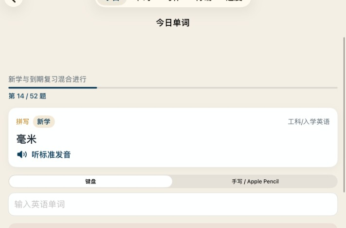
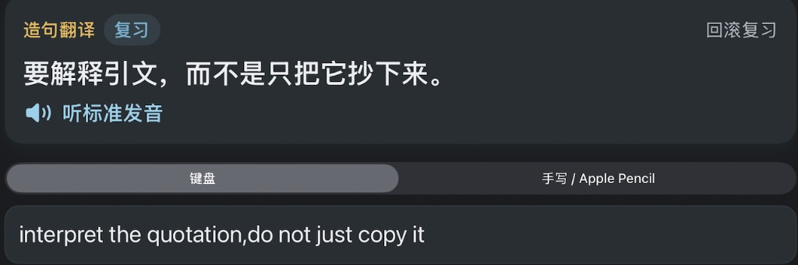

今日训练
五个入口，一条学习路径
底部五个标签：今日、单词、写作、背诵、进度。每天打开「今日」，按到期卡片混合新学与复习。
给准备申请加拿大工科、工程技术类 College 的学生，尤其需要把入学英语练到能读说明、能写指令、能开口说完整句子。
今日训练
底部五个标签：今日、单词、写作、背诵、进度。每天打开「今日」，按到期卡片混合新学与复习。
界面按「今日任务」来走：先看中文，再写或说英文，检查后立刻看到依据。

单词
例如把「毫米」写成 millimetre。每题可听标准发音，键盘和手写随时切换。新学与到期复习混在同一组里。
写作
像「请在开始工作前阅读安全手册」这样的工地指令，要译成完整英语。可用键盘，也可用 Apple Pencil。评分会回译对照，缺半句不能过关。

夜间模式下，输入框与文字会拉开对比，逗号等标点仍作为词界，不会把两个单词粘在一起。
覆盖入学常用词汇，突出不规则动词（过去式、过去分词、动名词）和动词短语。练习含拼写、中英互译、词形变化。
把中文译成完整英语句子。可用键盘，也可用手指或 Apple Pencil 手写后识别。评分先看是否在翻译这句中文，再看是否写全、拼写是否正确。
每天约 5–10 句。先看中文提示，录音后把口语转成文字，对照标准句评分。80 分以上视为过关。
答对：约 1 天 → 6 天，再按熟悉度拉长。答错：当天插入回滚，并缩短下次间隔。新内容和旧内容混合出现。
造句会显示回译对照、意思、用词、句式和拼写。缺半句不能过关；标点会当成词界，不会把两个单词粘成一个去判错。
连续天数、已巩固卡片、近 14 天练习次数，以及单词 / 句子 / 背诵库的引入进度，方便看到自己走了多远。
先看当天到期的单词、造句和背诵。不必三个模块一次做完，做完一项就会记入进度。
按提示拼写、互译或写出不规则动词词形。可用键盘，也可用手写。点「检查」后看对错，再进「下一题」。
把中文译成英文。不要只写半句。检查后会看到回译和扣分说明。键盘弹出时，「检查 / 下一题」会停在屏幕底部。
先听示范，再点录音，完整读完标准句后停止。系统把语音转成文字并打分。需要麦克风和语音识别权限。
错过的内容会按遗忘曲线提前回来。连续练习会累积天数。数据保存在本机。